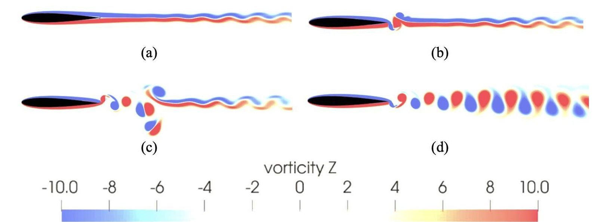

Join the WISE Research Group
Students in the group build, test, compute, and publish. They helped build the LSU WISE open-jet facility, test full-size trees and large building models, pair CFD with machine learning, and go on to faculty and industry careers.
What students do here
Hands-on research, published with students as co-authors.

Build
In 2013, students helped build the group’s first open-jet wind generator: a wooden frame with 15 fans and a test table. They measured its flow with a Cobra probe, presented the first results in 2014, and the flow was validated in Measurement (2017).

Test
Large-scale tests in the LSU WISE open-jet facility: instrumented low-rise and high-rise building models, rooftop solar panels, bridge sections, and full-size trees, up to destructive testing at high wind speeds.

Compute
Large-eddy and Reynolds-averaged simulation paired with machine learning, from wind loads on solar panels to wind-turbine blade fatigue and the unsteady aerodynamics of airfoils.

Control
Vibration-control devices designed, built, and verified on a shake table: a tuned pendulum pounding mass damper developed with a Ph.D. student cut base shear by 55.7% in experiments.
Students publish
Research in the group ends in a journal article.
38 journal articles co-authored with graduate students, and 7 with students who began in the group as undergraduates. Hannah DiLeo’s 2023 M.S. thesis on aerodynamic mitigation in bridges became a paper in Wind (2025). Undergraduates have co-authored papers in Engineering Structures (Ryan Clancy, 2022) and the Journal of Building Engineering (Joseph Bresowar, 2016).
Student honors
Recognition earned by students in the group.
- Jack (John R.) Clarke, M.S.: U.S. Air Force Summer Fellowship, 2022.
- Suvash Chapain, Ph.D.: Economic Development Assistantship, 2018; NSF support to attend the PREEMPTIVE Advanced Studies Institute in Costa Rica, 2019.
- Emily Rone: McLaughlin Medal; continued to an M.S. in the group.
- LSU Discover Scholar awards: Raymond Poche (2018), Matthew Thomas (2018), and Hongjie Zhu (2021); Matthew Thomas also received an LCOPRI ASCE scholarship (2018).
- Lisa Goodgion: Best Presentation, College of Engineering, and the Tigers Choice Award, LSU Discover Day, 2016.
- C. Chokwitthaya: Best Presentation Award, Louisiana Academy of Sciences Annual Meeting, 2015.
- Six selections as LSU President’s Future Leaders in Research: Joseph Bresowar, Ryan Clancy, Anthony T. Nguyen, Long Tran, Eli Barbin, and Dalton Guidry.
Texas Tech University Geosyntec Consultants Brown & Brown Anchor QEA WGI HNTB Fluor Stantec Tetra Tech Forte & Tablada Volkert Nucor Building Systems BASF U.S. Coast Guard
How to join
Prospective Ph.D. and M.S. students: email Dr. Aly a CV and a short note on your research interests, and apply through the LSU Graduate School. LSU undergraduates interested in research, including through LSU Discover, are welcome to email as well. Admission and any assistantship are offered by the university through its standard process.